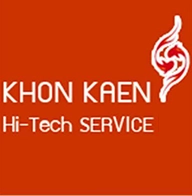

ระบบน้ำ (Water System)
เดินท่อ PPR/PVC เกรด A ติดตั้งปั๊มน้ำแรงดันคงที่ และแทงค์สำรองน้ำ เพื่อให้เครื่องทำงานต่อเนื่องแม้น้ำประปาไหลอ่อน

ขอนแก่นไฮเทคKhon Kaen HiTechไม่ว่าคุณจะเป็น เจ้าของหอพัก ที่อยากติดเครื่องซักผ้าเพิ่มรายได้ หรือนักลงทุนที่อยากเปิด ร้านสะดวกซัก (Laundromat) เต็มรูปแบบ ขอนแก่นไฮเทค พร้อมดูแลวางระบบให้ครบจบในที่เดียว ด้วยทีมช่างมืออาชีพ
ฝาบน / ฝาหน้า (Home Use)
เหมาะสำหรับ: หอพัก, อพาร์ตเมนต์, หน้าบ้าน, ชุมชนขนาดเล็ก
เครื่องอุตสาหกรรม (Commercial)
เหมาะสำหรับ: ลงทุนเปิดร้านจริงจัง, แหล่งชุมชนหนาแน่น
ไม่ว่าจะเป็นเครื่องเล็กหรือเครื่องใหญ่ "ระบบน้ำ-ไฟ" คือหัวใจสำคัญ เราดูแลให้ครบ:
เดินท่อ PPR/PVC เกรด A ติดตั้งปั๊มน้ำแรงดันคงที่ และแทงค์สำรองน้ำ เพื่อให้เครื่องทำงานต่อเนื่องแม้น้ำประปาไหลอ่อน
แยกเบรกเกอร์อิสระทุกเครื่อง ติดตั้งระบบสายดิน (Ground) ป้องกันไฟรั่ว 100% สำหรับร้านใหญ่เราติดตั้งตู้ MDB มาตรฐานโรงงาน
เทฐานปูนคอนกรีต หรือแท่นเหล็กยกสูง เพื่อลดแรงสั่นสะเทือน ยืดอายุเครื่อง และทำความสะอาดพื้นง่าย
ตอบ:
• เครื่องฝาบน: ราคาถูก ซักนาน (45-60 นาที) เหมาะกับหอพักที่เน้นประหยัด
• เครื่องอุตสาหกรรม: ราคาสูง ทนทานมาก ซักเร็ว (25-30 นาที) และมีเครื่องอบผ้าแห้งสนิท เหมาะสำหรับทำธุรกิจร้านสะดวกซักครับ
ตอบ: งบประมาณขึ้นอยู่กับจำนวนและยี่ห้อเครื่องครับ (เช่น Speed Queen, Alliance, หรือแบรนด์จีน) แนะนำให้โทรปรึกษาเพื่อให้เราประเมินความคุ้มค่าของทำเลให้ก่อนฟรีครับ
ตอบ: รับครับ! เรามีทีมช่างซ่อมบอร์ด ซ่อมกล่อง และล้างถังเครื่องซักผ้า ให้บริการในเขตขอนแก่นครับ